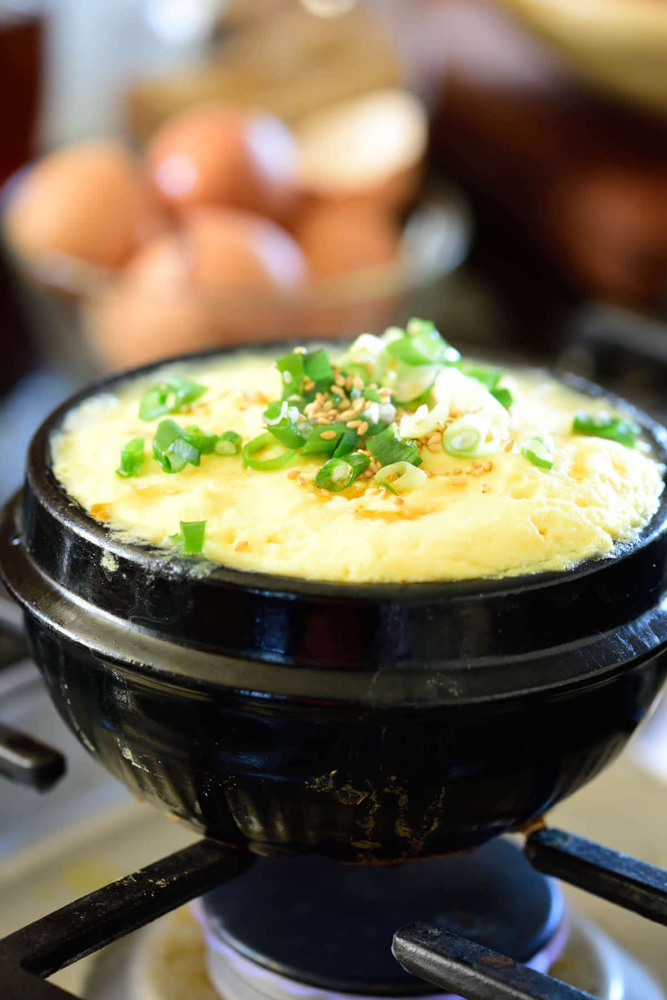
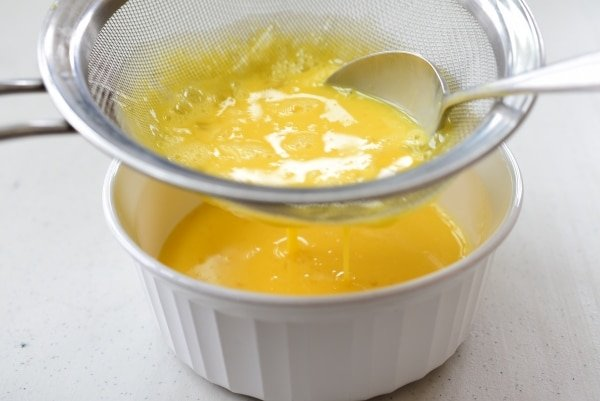
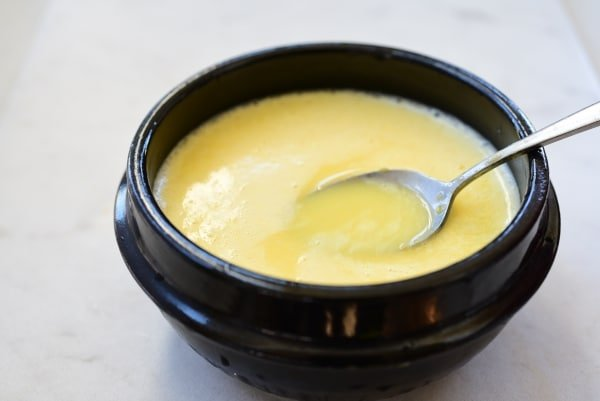

Korean Steamed Egg 계란찜
Ingredients
- 4 - 5 large eggs
- 1 cup anchovy broth (or water or dashima broth)
- 1.5 teaspoons salted shrimp (saeujeot) or 3/4 teaspoon salt
- 2 tablespoons chopped scallion
- 1 teaspoon sesame oil, divided - optional
- 1/2 teaspoon sesame seeds - optional>
Preparation time
- Prepare ingredients: 10 minutes
- Cooking time: 10 minutes
Instructions
Prepare ingredients:
- Beat the eggs with a spoon.
- Run the mixture through a sieve to break it down into a smooth liquid consistency. (If you skip this process, make sure to beat the eggs until very smooth.) Mix the beaten eggs well with the anchovy broth or water and salted shrimp (saeujeot), salt, or fish sauce. 
- Lightly oil your pot or bowl with 1/2 teaspoon sesame oil or cooking oil. If using an earthenware, start heating it while preparing the egg mixture. 
Cooking time:
- Place the bowl with the egg mixture in the microwave. Don't need to cover it. Cook for 2 minutes, and stir. Cook for another 2 minutes, and stir. Check to see if the egg is still runny in the middle, and cook for another minute or until the egg is set in the middle.